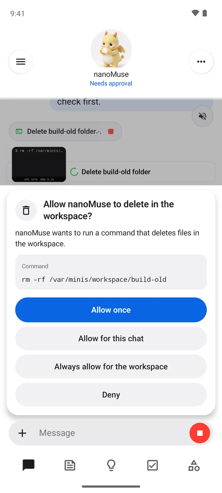
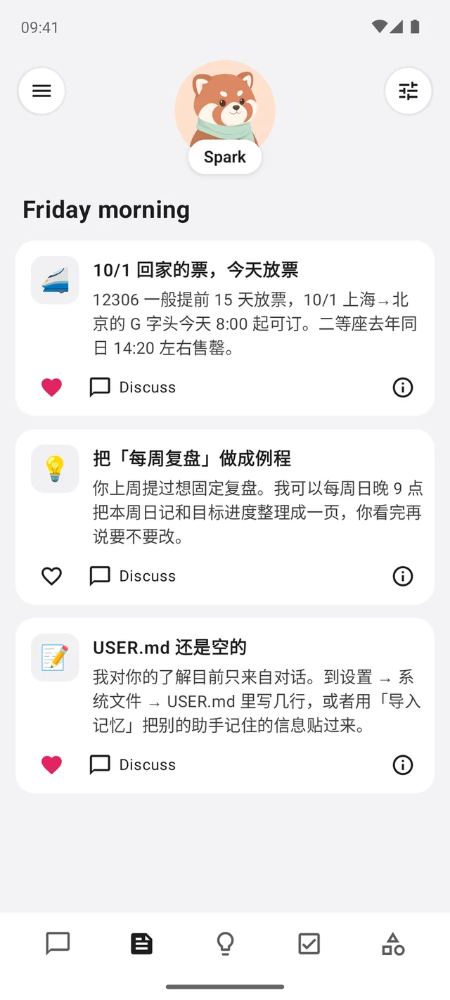
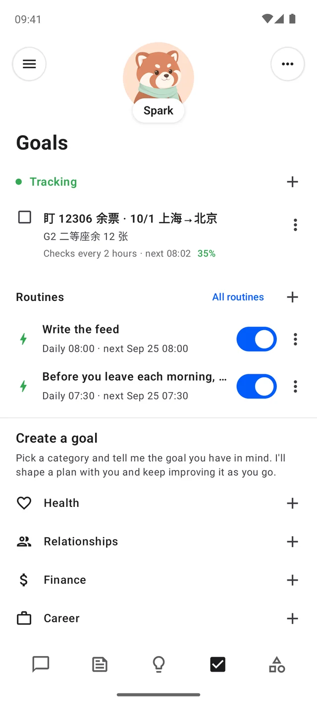
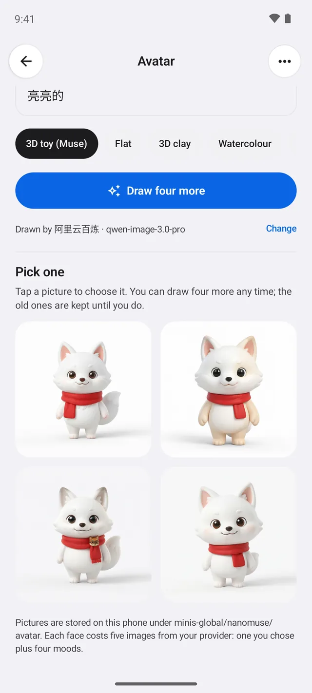

Open source · GPL-3.0 · Android 开源 · GPL-3.0 · Android
A personal AI agent
that lives on your phone.
一个住在你手机里的
个人 AI 智能体。
nanoMuse is an open-source take on Meta's Muse. One agent with a name and a face: it does things instead of answering questions, keeps working while the app is closed, remembers you, and stops to ask before anything you could not undo. Everything runs on the phone, with a model you bring. nanoMuse 是 Meta Muse 的开源实现。一个有名字、有脸的智能体：它做事而不是只回答，App 关掉了也继续干活，记得你，遇到无法撤销的操作先停下来问你。一切都在手机上运行，模型由你决定。
Android 8.0 or newer, arm64 · alpha 0.1.8 · every version is signed with the same key and installs over the last. Android 8.0 以上，arm64 · alpha 0.1.8 · 每个版本同一把签名，覆盖安装即可升级。




What it does能做什么
-
Does things动手做事
A Linux shell, a browser, MCP servers, skills, and the apps on your phone through their screens when there is no API. It picks the hand the job needs. Linux shell、浏览器、MCP、技能，以及在没有 API 时通过屏幕操作手机上的 App。它自己挑合适的那只手。
-
Asks first关键处先问
A stop before deleting, sending or paying, scoped to once, this chat or always — per recipient, domain or folder. Passwords and codes are always yours to type. 删除、发送、付款前先停下：只此一次、本次对话或一直允许，按收件人、域名、目录记住。密码和验证码永远由你输入。
-
Keeps going一直在干
Goals checked on a schedule in their own conversation, routines that run while the app is closed, the screen kept awake when it drives the phone, and a "continue?" instead of an early wrap-up. 目标在自己的会话里按时检查，例程在 App 关着时照跑，操作手机时屏幕不灭，到步数上限问「继续？」而不是草草收尾。
-
Writes you a feed写给你的动态
Every morning, a few short posts from what it knows about you and what you asked it to follow. Steer it with one sentence. 每天早上几条短帖，来自它对你的了解和你让它盯的事。一句话就能调它的方向。
-
Remembers you记得你
Who it is, what it knows about you, what it remembers and when it wakes are four Markdown files you can read and edit. Bring what another assistant knew. 它是谁、知道你什么、记住了什么、什么时候醒，是四个你能看能改的 Markdown 文件。别的助手记住的你，可以直接带过来。
-
Has a face有一张脸
Describe one, your image model draws four, you pick. It breathes at rest, bobs while it works, tilts when it needs you, pops when a task lands. 描述一句，你的图像模型画四张，你挑一张。休息时呼吸，工作时点头，需要你时歪头，任务完成时跳一下。
How it works怎么工作
On the phone在手机上
Built on OpenMinis: a Linux root file system under proot, a shell, a browser, MCP, skills, scheduled tasks and an accessibility executor — inside the APK, no server, no cloud VM. Your files and memory never leave the device. 基于 OpenMinis：proot 下的 Linux 根文件系统、shell、浏览器、MCP、技能、定时任务和无障碍执行器——都在 APK 里，没有服务器，没有云端虚拟机。你的文件和记忆不离开手机。
Your model你的模型
Any OpenAI-compatible endpoint, or the OAuth sign-ins the app ships with. Messages go only to the model you configured; the avatar is drawn by an image model on the same account. 任何 OpenAI 兼容的接口，或 App 自带的 OAuth 登录。消息只发给你配置的模型；形象也由同一账号下的图像模型来画。
Open开放
GPL-3.0-or-later, one small version at a time, each an installable APK with its notes. Not affiliated with Meta; Muse is a trademark of Meta Platforms, Inc. GPL-3.0-or-later，按小版本逐个发布，每个都是能装的 APK 并附说明。与 Meta 无关；Muse 是 Meta Platforms, Inc. 的商标。
Versions版本
- 0.1.1FoundationOpenMinis as nanoMuse — icon, name, colours, one signing key.OpenMinis 变成 nanoMuse——图标、名字、配色、一把签名。
- 0.1.2IdentityA name and a face; a first conversation that names the agent.有了名字和脸；第一次对话里给它起名。
- 0.1.3HomeOpens on a chat; Ideas, Goals and Library; side chats in a drawer.打开就是对话；点子、目标、资料库；旁聊在抽屉里。
- 0.1.4GuardrailsApprovals with scope before deleting, sending, paying.删除、发送、付款前带范围的审批。
- 0.1.5MemoryThe feed, the system files, memory import, "continue?".动态、系统文件、记忆导入、「继续？」。
- 0.1.6AvatarA face you choose, posed and animated; motion everywhere.你挑的脸，有姿势有动作；处处有动效。
- 0.1.7WelcomeThe first run: a welcome screen with the three steps — provider, its models, meet the agent.第一次运行：欢迎页带三步——服务商、它的模型、认识它。
- 0.1.8PolishThe shell level with Muse's: type, the composer pill, only the name under the face, Muse's settings pages.壳子对齐 Muse：字体排印、胶囊输入框、脸下只有名字、Muse 样式的设置页。
- 0.2.0BetaPolish from the first weeks of use; the first beta.头几周使用后的打磨；第一个 beta。